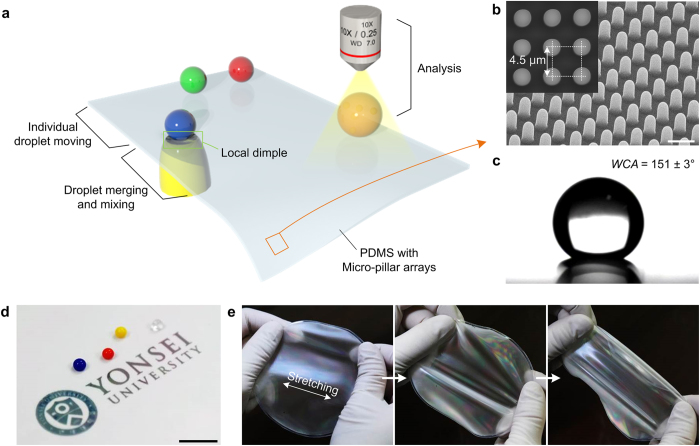

Background
Vacuum creates small dimples in an elastic, water-repellent surface to move, merge and mix droplets. The abstract describes applications in Raman analysis and delivery of siRNA to cells.
What the study found
Vacuum creates local dimples in micropillared PDMS, changing adhesion and slope to move, merge and mix droplets.
The study uses these local shape changes for programmable droplet handling, with demonstrations in surface-enhanced Raman spectroscopy (SERS) and cellular siRNA delivery.

The figure presents the micropillared PDMS platform, its local dimples for moving, merging and analysing droplets, and substrate characterization.
Jungmok Seo, Seoung-Ki Lee, Jaehong Lee et al. “Path-programmable water droplet manipulations on an adhesion controlled superhydrophobic surface”. Figure 1. DOI: 10.1038/srep12326. CC BY 4.0. Figure content is unchanged.
Source figure and caption ↗ · DOI: 10.1038/srep12326 ↗ · CC BY 4.0 ↗
Questions and limits
A question for further study is how sample composition, volume and residue buildup affect route repeatability.
How to compare the results
Compare droplet volume, viscosity and surface tension, pillar geometry, and vacuum settings. Analytical performance and cellular delivery need their own endpoints.
Related reading
Bioinspired self-repairing slippery surfaces with pressure-stable omniphobicity
Slippery liquid-infused porous surfaces (SLIPS) offer a comparison between a lubricated interface and the dry droplet transport used here.
Lubricant carryover and active path control call for different evaluations.
Abstract-based introductionRESEARCH NEWS
Research in the news
Sources used in this summary
The ten-page main text, original figures, nine-page supplementary PDF and ordered key scenes from one supplementary movie were read. This does not include examining every video frame or independently reanalysing the data.